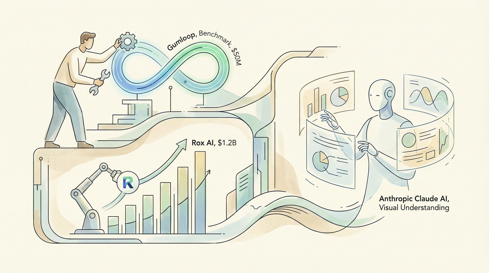

Sales automation公司Rox AI达到12亿美元估值
两克伴AIGC日报
2026-03-13 星期五

本期关注：企业AI代理加速发展（Gumloop融资、Rox高估值、MIT强调数据基础设施重要性），模型竞争格局生变（Grok、Claude超越DeepSeek排名上升，Gemini份额近四分之一，OpenAI3月或承压），Claude新增可视化支持。
📰 行业动态
Wonderful获得1.5亿美元B轮融资，扩大企业AI代理业务
Anthropic的Claude AI可生成图表、图表等可视化内容
NVIDIA博客探讨工业AI和数字孪生在多行业中的应用
🔥 今日焦点
根据Reddit用户u/GamingDisruptor的分享，AI领域近期发生了一系列重要变化。截至2月，Grok和Claude在AI模型排名中分别位列第三和第四，其中Claude的份额首次突破3%。与此同时，Gemini的份额正逐渐接近总份额的四分之一。然而，由于DoW（DeepWeave）的反抗，预计3月对OAI（OpenAI）来说将是一个艰难的月份。
这一变化对AI领域具有重要意义。首先，Grok和Claude的崛起表明，除了ChatGPT之外，市场上还有其他优秀的AI模型。其次，Claude份额的增长意味着该模型在性能和用户接受度方面取得了显著进步。此外，Gemini份额的上升也显示出市场竞争的加剧，这有利于推动整个行业的技术创新。
随着企业对人工智能（AI）的采纳和应用速度不断加快，MIT Technology Review Insights的一篇文章指出，构建强大的数据基础设施对于AI代理的成功至关重要。文章强调，企业正迅速部署AI代理作为协同驾驶员、助手和自主任务执行者。到2025年底，近三分之二的公司开始尝试使用AI代理，而使用AI至少在一个业务功能中的公司比例也从2024年的78%上升至88%。这一趋势凸显了数据基础设施在AI领域的重要性，因为它不仅支持AI代理的部署，还直接关系到它们的价值实现。强大的数据基础设施能够确保AI代理在处理复杂任务时具备准确性和效率，从而对AI领域的整体发展产生深远影响。对于AI从业者而言，理解并优化数据基础设施对于推动AI技术的商业应用至关重要。
---
谷歌地图于3月12日宣布推出一项创新功能——“问地图”，该功能通过结合地图与Gemini模型，实现了对话式交互，能够解答以往地图无法回答的复杂现实问题。这一举措标志着地图服务从静态信息展示向智能化交互迈出了重要一步。
“问地图”功能的推出具有重要意义。首先，它为用户提供了更加便捷、直观的地图使用体验，使得用户能够通过自然语言提问，快速获取所需信息。其次，这一功能展示了人工智能在地图领域的应用潜力，为地图服务的发展提供了新的思路。此外，它还可能对AI领域产生深远影响，推动地图服务与人工智能技术的深度融合。
📚 深度长文
《Coding After Coders: The End of Computer Programming as We Know It》一文深入探讨了人工智能辅助开发对计算机编程行业的影响。作者Clive Thompson采访了包括谷歌、亚马逊、微软、苹果等公司在内的70多位软件开发者，以及Anil Dash、Thomas Ptacek、Steve Yegge等业界人士，揭示了人工智能在编程领域的广泛应用和潜在变革。
文章的核心观点是，随着人工智能技术的飞速发展，传统的计算机编程模式正逐渐走向终结。作者指出，尽管人工智能在编程过程中存在幻觉等风险，但软件开发者可以通过将人工智能与现实世界相结合，降低这些风险。文章强调，编程的独特之处在于，开发者能够将人工智能系统与现实世界紧密相连，从而确保其输出的代码更加可靠。
《Perplexity's new answer to OpenClaw：PLUS：Create agentic workflows in Google Workspace Studio》一文由Jennifer Mossalgue撰写，深入探讨了Perplexity公司针对OpenClaw提出的新解决方案。文章核心观点在于，Perplexity通过创新技术，在Google Workspace Studio中实现了智能化的工作流程创建，为AI从业者提供了强大的工具。
文章的关键论据包括：首先，Perplexity的新解决方案在OpenClaw的基础上进行了优化，使其在处理复杂任务时更加高效；其次，通过Google Workspace Studio，用户可以轻松创建、管理和优化智能工作流程，极大提升了工作效率；最后，文章强调了该解决方案在数据分析和机器学习领域的广泛应用前景。
本文由Turbopuffer的Simon Hørup Eskildsen撰写，深入探讨了检索后RAG（Retrieval-Augmented Generation）在混合搜索、智能代理和数据库设计中的应用。文章的核心观点在于，RAG技术不仅限于文本生成，更是一种强大的检索工具，能够有效提升信息检索的准确性和效率。Eskildsen通过实例论证了混合搜索的优势，即结合传统搜索引擎和RAG技术，实现更精准的信息检索。此外，他还强调了智能代理在信息检索中的重要作用，并提出了数据库设计的新思路，即以用户需求为导向，构建更加灵活和高效的数据库架构。本文对于AI从业者而言，具有较高的阅读价值，不仅有助于了解RAG技术的最新进展，还能启发对混合搜索、智能代理和数据库设计的深入思考。
---
《Pragmatic by design: Engineering AI for the real world》一文由MIT Technology Review Insights撰写，深入探讨了人工智能在现实世界中的广泛应用及其对日常生活的深远影响。文章指出，人工智能已从数字领域扩展至汽车、家电和医疗设备等众多领域，成为产品工程师提升、验证和优化设计的重要工具。文章强调，工程师们正致力于将AI技术融入产品设计中，以实现更高效、更智能的解决方案。文章通过丰富的案例和深入分析，揭示了AI在现实世界中的挑战与机遇，为AI从业者提供了宝贵的参考和启示。阅读本文，有助于了解AI在产品设计中的应用现状和发展趋势，对提升AI工程实践能力具有重要意义。
🛠️ 产品推荐
Tokemon是一款终端仪表盘，旨在跟踪LLM（大型语言模型）token使用情况。该产品通过解析和去重处理，自动识别并统计AI编码工具（如Claude Code、Cursor等）在用户机器上生成的日志和缓存文件，帮助用户实时了解token消耗及API成本。Tokemon有效解决了多工具使用时难以追踪token消耗和成本的问题，为技术从业者提供便捷的AI资源管理工具。
---
Show HN：我们用7天发布了50篇AI辅助文章，结果如何？本产品通过Trend Discovery、AI Drafting（微调）、Human Editing Gate、Automated Scheduling和Performance Loop等流程，实现AI内容自动化。7天内，3个博客共发布47篇文章，其中12篇在3周内登上谷歌首页，平均每人每篇文章编辑时间缩短至45分钟，AI总成本为380美元，每篇文章成本降低。本产品利用AI技术，高效解决内容创作难题，助力企业快速产出高质量文章。
---
Show HN：一款针对Android应用和终端工作流的Push-to-talk语音输入工具。该产品旨在解决Android平台上语音输入体验不佳的问题，并提供一种便捷的语音转文字功能。用户可通过悬浮按钮轻松实现语音输入，支持本地和云端转录，有效提升工作效率。此外，该产品与SwiftKey键盘兼容，无需更换现有输入方式，为Android用户带来更流畅的语音输入体验。